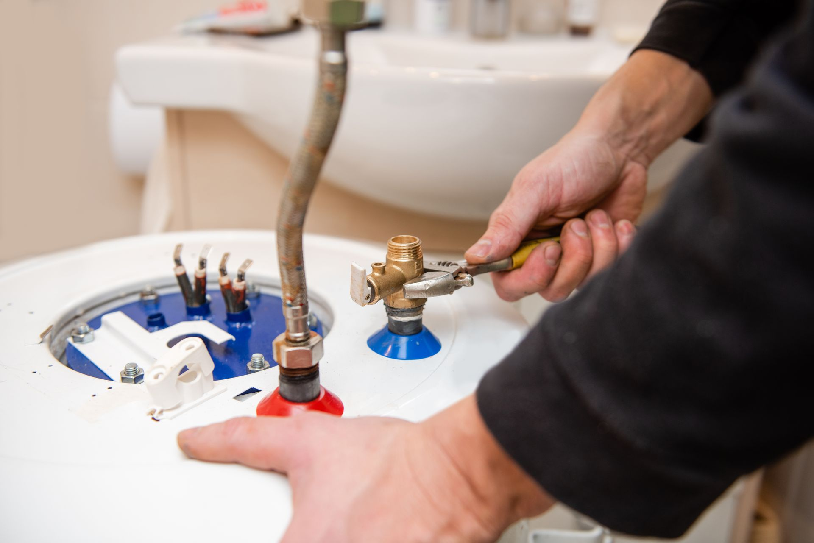

How Garland's Hard Water Affects Your Water Heater and What to Do About It
July 18, 2026

Hard water is a specific threat to Garland water heaters. This post covers the damage it causes and how Water Heater Repair in Garland, TX, can help you prevent costly breakdowns.
Garland's water averages 161 mg/L, or 7.0 to 10.5 grains per gallon. The calcium and magnesium behind that hardness are anything but a minor inconvenience for your water heater.
How Hard Water Damages Your Water Heater
When water heats, calcium and magnesium separate out and settle at the tank bottom as sediment. In gas units, that layer forces the burner to work harder to reach temperature; in electric models, it coats the heating elements and burns them out. Either way, energy bills climb and hot water runs short.
Garland draws from six surface sources, including Lavon Lake, Lake Tawakoni, and Lake Texoma. Dissolved minerals from regional soil make sediment buildup a year-round concern.
What Are the Signs Your Water Heater Has Sediment Buildup?
- Popping, rumbling, or banging sounds during heating cycles.
- Water that takes longer to get hot at the tap.
- Rusty or discolored hot water, particularly in older tank units.
- Higher-than-usual gas or electric bills.
- Hot water that runs out faster than it used to.
Should You Repair or Replace Your Water Heater?
Water heaters typically last 8 to 12 years in hard water areas, and heavy sediment shortens that. Units under eight years old with problems caught early can often be restored through flushing and component service. Older units, or those showing tank corrosion, are usually better replaced.
Annual Flushing Best Practices for North Texas Homes
Annual flushing removes settled sediment before it hardens onto the tank floor. Once a year is a reasonable minimum for Garland's hardness levels; older pipes or heavy water use may call for every six months.
Can a Water Softener Help Protect My Water Heater?
A whole-home softener reduces mineral load across all your plumbing and appliances. It's an upfront investment, but it can significantly reduce sediment accumulation and extend the life of your tank.
Speake's Plumbing, Inc. has served Garland homeowners since 1987. Call 972-271-9144 or visit the water heater repair page.